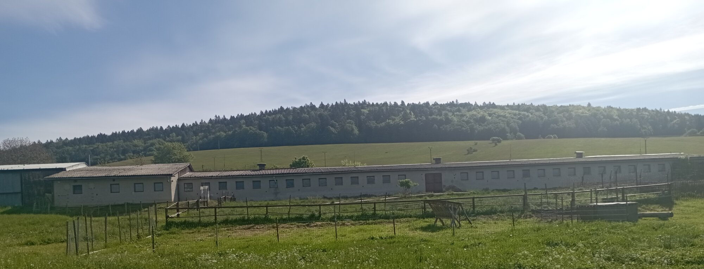
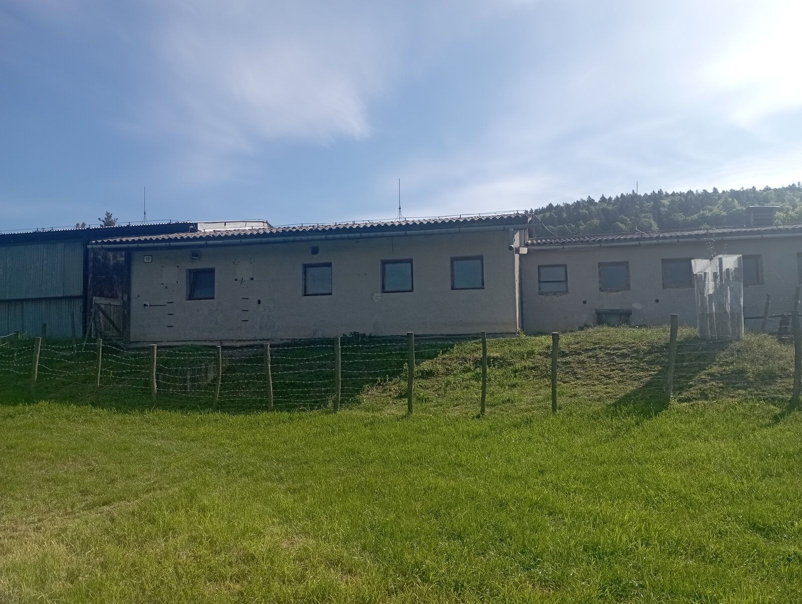
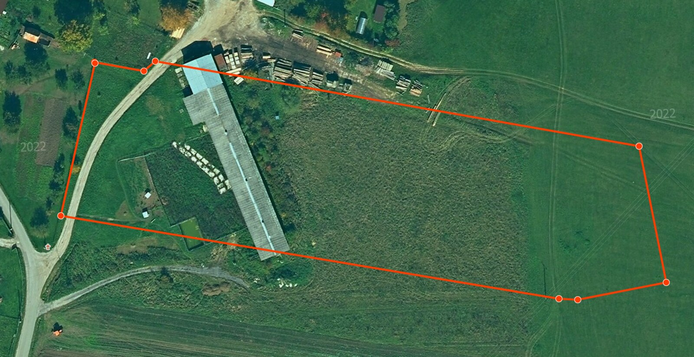
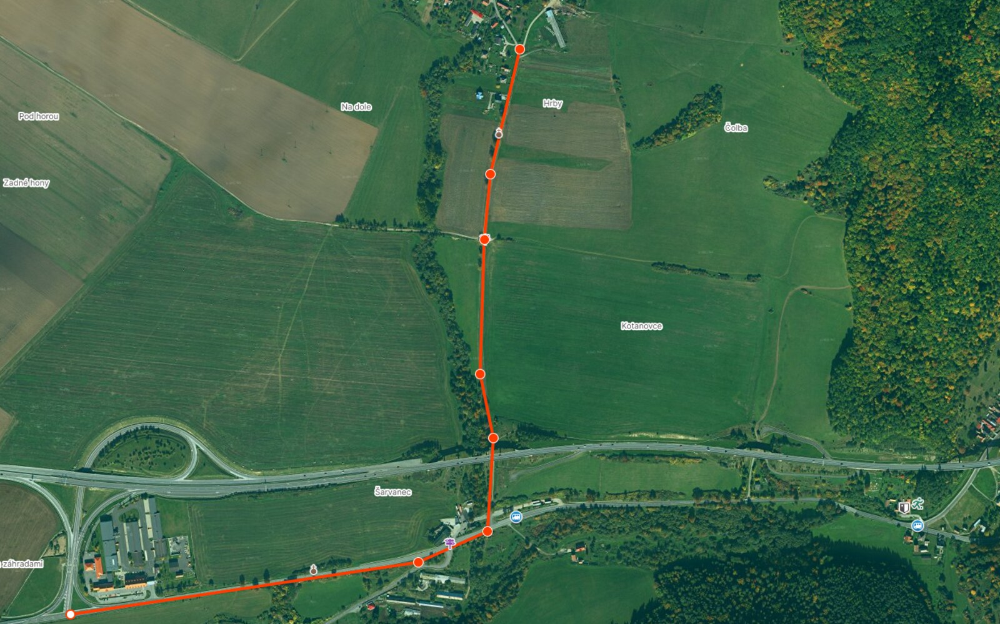

Skladové priestory
Spolu 940 m² krytej plochy v budove a prístrešku — uskladnenie materiálu, tovaru, plodín či krmiva pri diaľnici D1.

Budova 810 m² s administratívnymi miestnosťami a rozvodom vody, kovový prístrešok 130 m² — spolu 940 m² krytej plochy. Možnosť prenájmu pozemkov do 1,46 ha. Sklad, dielňa, hala či poľnohospodárska prevádzka — len 2 km od diaľnice D1.
Na dlhodobý prenájom ponúkame murovanú hospodársku budovu (súpisné číslo 59) v obci Pongrácovce v okrese Levoča. Budova má zastavanú plochu 810 m² a pozdĺžny pôdorys s radom okien po celej dĺžke a viacerými samostatnými vstupmi — priestor sa dá ľahko rozdeliť na menšie prevádzkové celky.
Súčasťou budovy sú administratívne miestnosti a zavedená vodovodná prípojka s rozvodom vody. K objektu patrí aj kovový prístrešok s plochou približne 130 m² na kryté státie techniky alebo skladovanie — spolu tak máte k dispozícii 940 m² krytej plochy. Areál má priamy vjazd z miestnej komunikácie.

Univerzálny objekt s výbornou dostupnosťou — uplatnenie v ňom nájde firma hľadajúca skladové priestory, remeselník aj poľnohospodár.
Spolu 940 m² krytej plochy v budove a prístrešku — uskladnenie materiálu, tovaru, plodín či krmiva pri diaľnici D1.
Samostatné vstupy a deliteľný pôdorys — stolárska či zámočnícka dielňa, spracovanie dreva, servis techniky.
Priestory vhodné na chov dobytka, oviec, kôz či koní — s možnosťou výbehov na priľahlých plochách.
Krytá aj vonkajšia plocha pre stroje, náradie a vozový park — s dostatočným manipulačným priestorom.
Voliteľné pozemky v jednom bloku — pestovanie plodín, produkcia krmiva alebo manipulačné plochy.
Máte inú predstavu? Rozsah priestorov aj podmienky nájmu prispôsobíme dohodou.
Kliknutím na fotografiu ju zobrazíte v plnej veľkosti.

Hlavnou ponukou je budova — no k nej si môžete prenajať aj priľahlé pozemky v jednom súvislom bloku.
Krytá plocha spolu 940 m² — budova 810 m² + kovový prístrešok ~130 m².
Súvislý blok ~14 560 m² (1,46 ha) priamo pri budove — dvor a nadväzujúce voľné plochy. Celý blok alebo len časť, podľa dohody.
Evidované v katastri bez tiarch. Prenájom priamo od vlastníka.
Obec Pongrácovce leží v okrese Levoča. Z výjazdu D1 Behárovce ste pri budove za dve minúty — ideálne pre logistiku, zásobovanie aj dochádzanie.

Nenašli ste odpoveď? Napíšte nám — odpovedáme promptne.
Napíšte nám cez formulár alebo e-mailom. Radi vám areál osobne ukážeme a nastavíme podmienky podľa vášho zámeru.
Budova 810 m² + prístrešok 130 m² · voliteľne pozemky do 1,46 ha
Dohodou — podľa rozsahu a dĺžky nájmu
Pongrácovce (budova s.č. 59), okres Levoča, 053 05